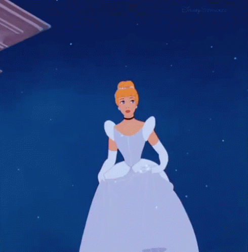
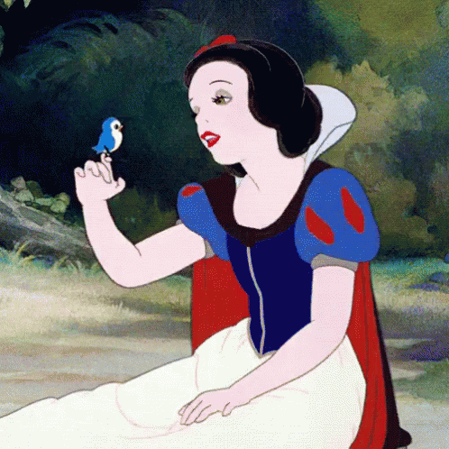
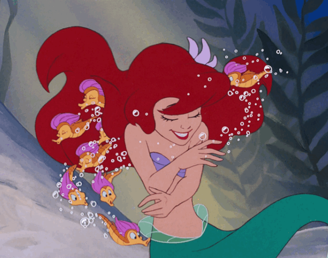
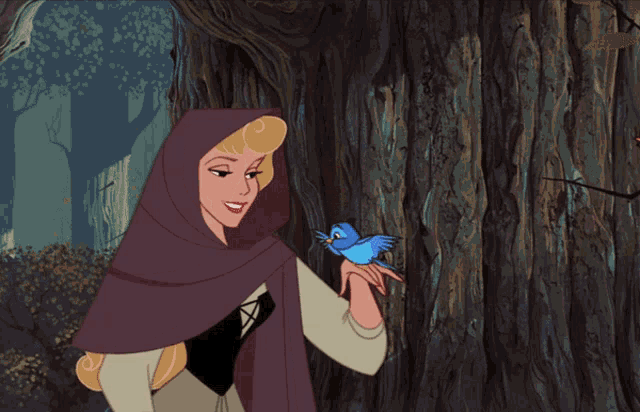
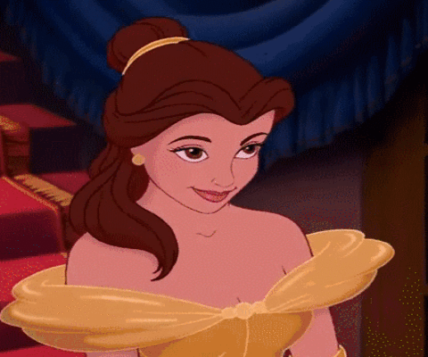

My Gallery

CINDERELLA
is 19 years old with medium-length strawberry-blonde hair, blue eyes, and fair complexion. After her father dies, she is forced into servitude in her own home and is tormented by her evil stepmother, Lady Tremaine, and two stepsisters, Anastasia and Drizella.

SNOW WHITE
was born into the royal family. Her mother died shortly after her birth. After some time, Snow White's father remarried a vain and cold-hearted queen. ... As a young child, Snow White's vain and wicked stepmother the Evil Queen feared that one day Snow White's beauty would surpass her own.

ARIEL
is the seventh-born daughter of King Triton and Queen Athena of an underwater kingdom of merfolk called Atlantica. She is often rebellious, and in the first film, she longs to be a part of the human world. She marries Prince Eric, whom she rescued from a shipwreck, and together they have a daughter, Melody.

AURORA
was born to King Stefan and Queen Briar Rose. From her parents, she knows Maleficent once cursed her mother into an eternal sleep before her father awakened her with true love's kiss. Years later she is betrothed to Prince Phillip (portrayed by Julian Morris). ... Phillip delivers True Love's Kiss to Aurora.

BELLE
is the female protagonist of Disney's 1991 animated feature film, Beauty and the Beast. She is the only daughter of Maurice, an inventor with whom she resides in a small, French village. Amongst the townsfolk, Belle is labeled an outcast because of her free-spirit.
 JASMINE
is the deuteragonist of Disney's 1992 animated feature film, Aladdin. She is an independent, rebellious young princess from Agrabah, a Middle Eastern kingdom ruled by her father, the Sultan. As the future Sultana, Jasmine has a strong sense of obligation to her country.
JASMINE
is the deuteragonist of Disney's 1992 animated feature film, Aladdin. She is an independent, rebellious young princess from Agrabah, a Middle Eastern kingdom ruled by her father, the Sultan. As the future Sultana, Jasmine has a strong sense of obligation to her country.